The five diagonal banners on your real profile, each with the avatar treatment that fits it best and one alternative. All avatar versions are made from your current photo; with a new photo they would look even cleaner.
Easiest win
A thick ring in a brand colour. One move, and the photo instantly belongs to the banner. Leaf ring on crimson or violet banners, crimson ring on leaf.
Most designed
Duotone: the photo recoloured into the palette. Looks like a brand asset and matches every banner. Best with a high-contrast photo.
If you reshoot
Shoot against a plain wall, or cut out the background and put yourself on flat leaf or violet. Wear something in violet or crimson, and you won’t need a ring at all.
D1 · Leaf
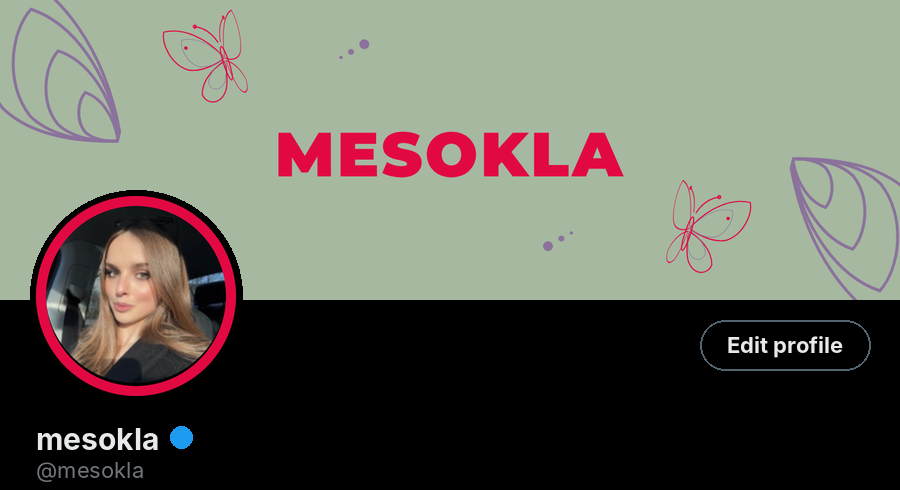
Recommended · crimson ring
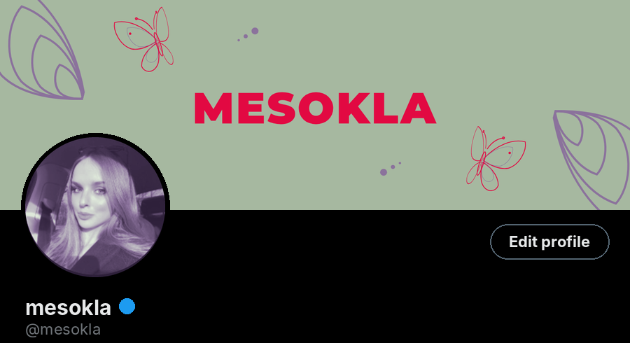
Alternative · violet duotone
D2 · Crimson
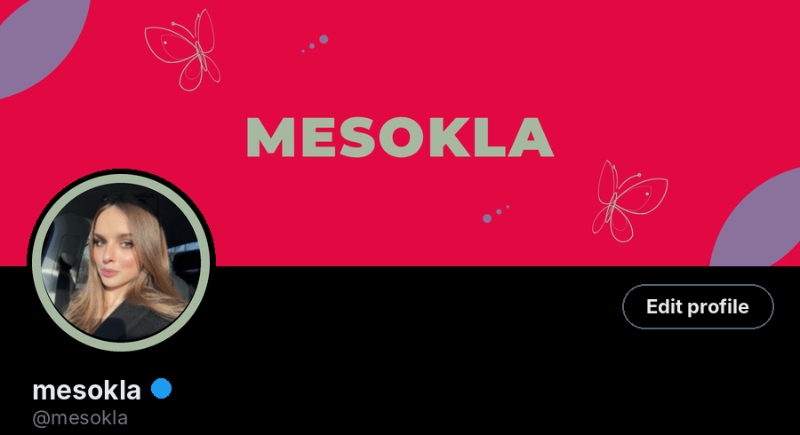
Recommended · leaf ring
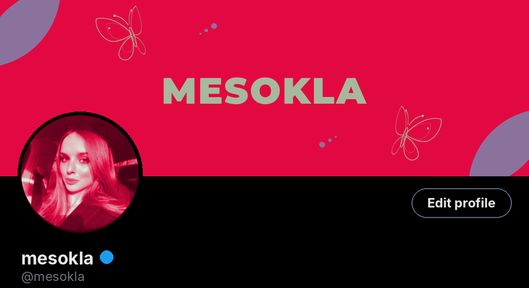
Alternative · crimson duotone
D3 · Violet
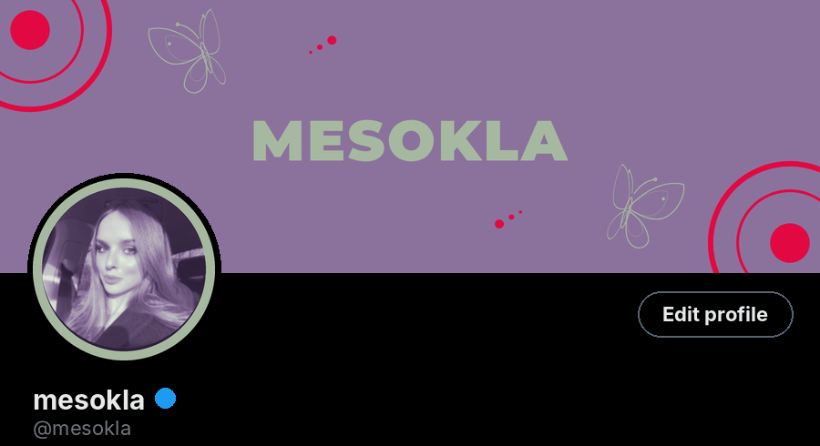
Recommended · duotone + leaf ring
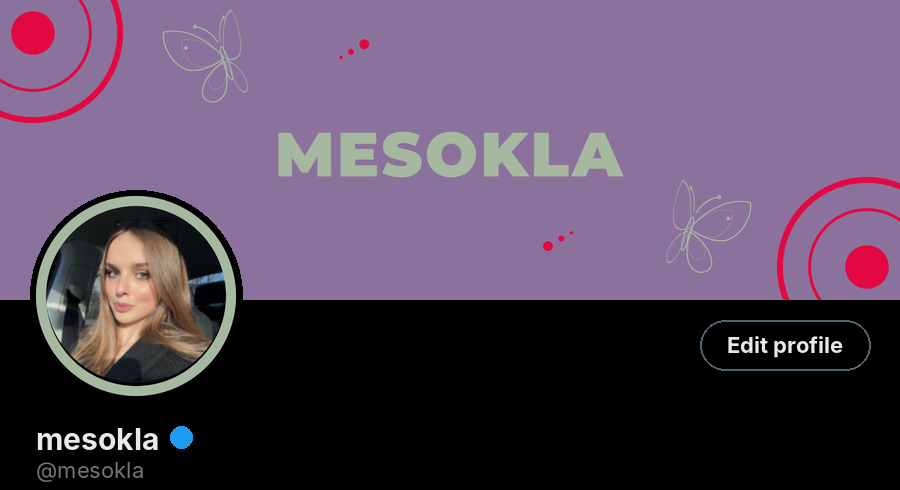
Alternative · leaf ring
D4 · Leaf + trails
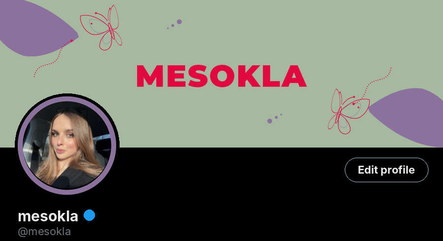
Recommended · violet ring
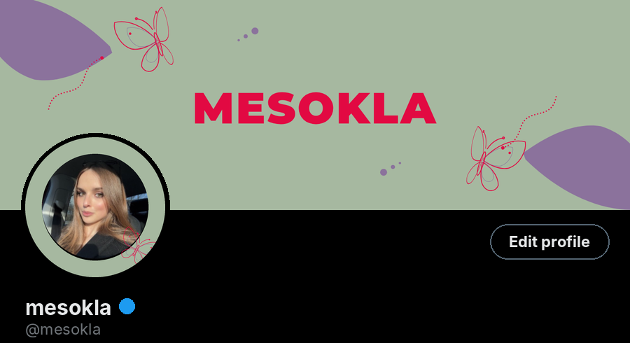
Alternative · leaf badge with moth
D5 · Violet + trails
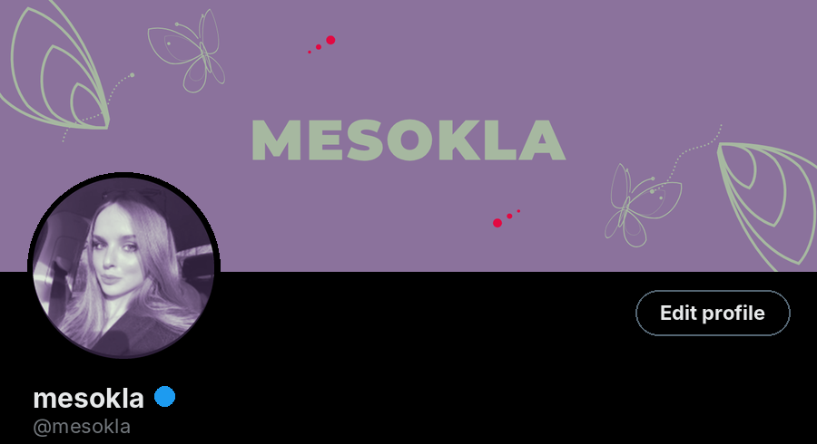
Recommended · violet duotone
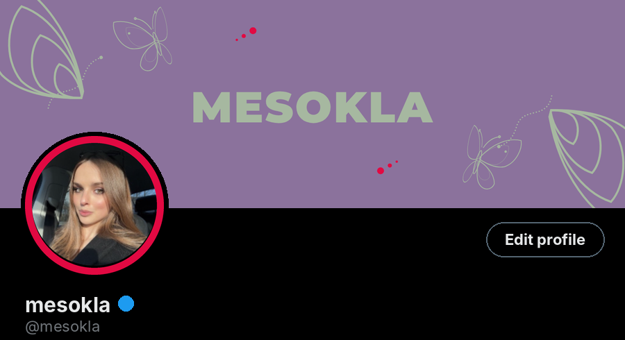
Alternative · crimson ring
All avatar treatments
400×400, ready to upload. X crops to a circle.
OriginalYour current photo, untouched. Works, but its colours are not from the palette.
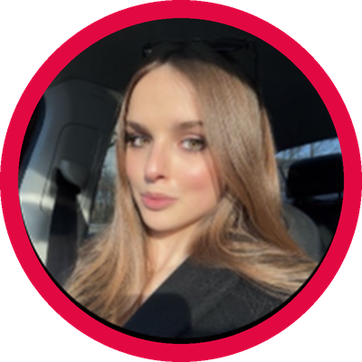
Crimson ringThick crimson ring. Pops on leaf banners, ties the photo to the brand.
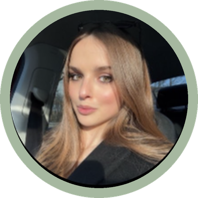
Leaf ringSoft leaf ring. Best on crimson and violet banners.Violet ringViolet ring, quiet and elegant on leaf.Violet duotonePhoto recoloured to the palette: deep violet shadows, light leaf highlights. Most “designed”.Crimson duotoneBold crimson duotone. Strong, use for campaign periods.
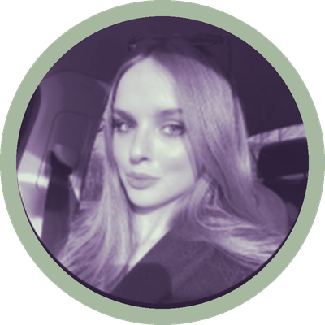
Duotone + ringViolet duotone inside a leaf ring. The most harmonious with any banner.
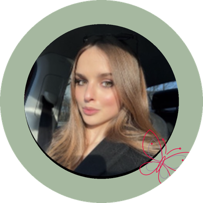
Badge + mothPhoto inside a leaf disc with the line moth on the edge. The moth gets thin at small sizes.
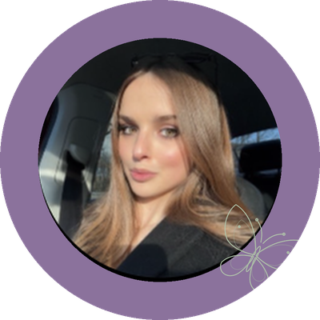
Violet badgeSame badge on violet with a leaf moth.Violet tintLight violet wash over the original. Subtle, keeps natural skin tones.